El sistema
IRIS OPTICAL es una aplicación de escritorio, desarrollada como proyecto académico de Tecnología en Desarrollo de Software, que apoya la administración de una óptica independiente organizando la información de sus pacientes y de los procesos de atención visual.
El nombre IRIS OPTICAL corresponde únicamente a la identidad del software; el sistema no realiza reconocimiento de iris ni autenticación biométrica.
El problema que busca resolver
En una óptica independiente, la información de los pacientes y de la atención visual suele manejarse mediante registros manuales, lo que dificulta organizarla, consultarla y actualizarla. IRIS OPTICAL propone centralizar esa información en una base de datos para reducir esa dependencia y mejorar la organización de los procesos administrativos.
Justificación y alcance
El proyecto permite aplicar en un caso realista los conocimientos de programación en Java, bases de datos relacionales y arquitectura de software. El alcance actual se concentra en el módulo de gestión de pacientes; los demás procesos de la óptica están contemplados para futuras etapas.
Objetivos
Objetivo general
Desarrollar un sistema integral de gestión óptica que permita organizar y administrar la información de los pacientes y los procesos asociados a la atención visual, mediante una aplicación de escritorio desarrollada en Java, conectada a una base de datos MySQL, con el propósito de mejorar la organización, consulta y manejo de la información de una óptica independiente.
Objetivos específicos
- Analizar las necesidades de gestión de información de una óptica independiente.
- Diseñar una solución de software utilizando la arquitectura Modelo-Vista-Controlador.
- Diseñar e implementar una base de datos relacional en MySQL.
- Desarrollar funcionalidades de registro, consulta, actualización y eliminación de pacientes.
- Establecer la conexión entre la aplicación Java y la base de datos mediante JDBC.
- Realizar pruebas que permitan verificar el funcionamiento de las funcionalidades implementadas.
- Documentar el desarrollo del sistema mediante los artefactos académicos correspondientes.
Funcionalidades y estado del desarrollo
Se distingue entre lo que ya está funcionando y lo que está contemplado para etapas posteriores.
Implementado
Gestión de pacientes (CRUD)
Insertar, buscar, actualizar y eliminar pacientes.
Interfaz gráfica
Interfaz de escritorio desarrollada con Java Swing.
Base de datos MySQL
Almacenamiento relacional de la información.
Conexión Java–MySQL
Comunicación funcional entre la aplicación y la base de datos mediante JDBC.
Arquitectura MVC
Separación en modelo, vista y controlador, con acceso a datos mediante DAO.
Validación de datos
Control de campos obligatorios y formatos, con mensajes de error claros.
Auditoría automática
Triggers en MySQL que registran cada inserción, actualización y eliminación.
Procedimiento almacenado
Búsqueda de pacientes por cédula directamente en MySQL.
Proyectado para futuras etapas
Exámenes visuales
Gestión de los exámenes visuales de los pacientes.
Fórmulas ópticas
Registro y consulta de fórmulas ópticas.
Información de atención visual
Organización de la información relacionada con la atención visual.
Procesos de la óptica
Organización de la información de los demás procesos de la óptica y posibles ampliaciones.
Arquitectura de software
IRIS OPTICAL sigue el patrón Modelo-Vista-Controlador (MVC), complementado con el patrón DAO para el acceso a datos. La arquitectura MVC y la conexión con MySQL ya están implementadas y funcionando.
Modelo
Clases que representan los datos y la lógica relacionada con su gestión.
Vista
Interfaces gráficas mediante las cuales el usuario interactúa con el sistema.
Controlador
Gestiona la comunicación entre la vista y el modelo.
Conexión a base de datos
Permite la comunicación entre la aplicación Java y MySQL.
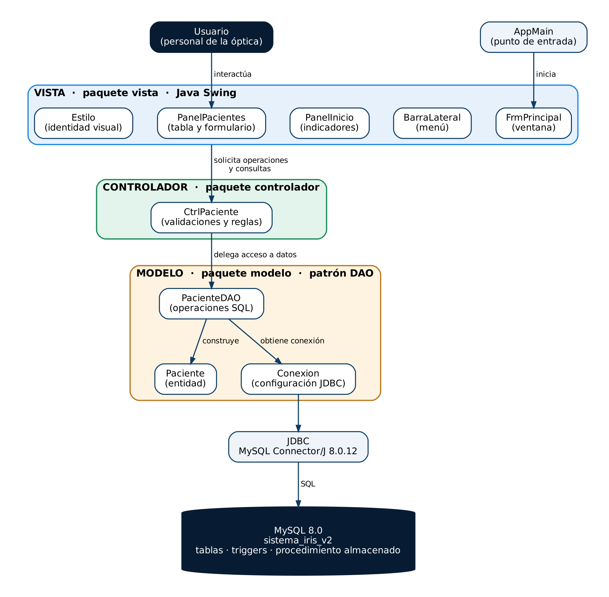
Tecnologías utilizadas
Java
Lenguaje de programación del sistema.
Java Swing
Construcción de la interfaz gráfica.
Apache NetBeans
Entorno de desarrollo.
MySQL
Base de datos relacional.
MySQL Workbench
Administración de la base de datos.
JDBC
Conexión entre Java y MySQL.
MVC + DAO
Arquitectura y patrón de acceso a datos.
Documentación y evidencias
Selecciona una pestaña para ver cada entregable: los documentos se pueden leer aquí o descargar, y las imágenes se amplían al hacer clic.
Especificación de requisitos de software de IRIS OPTICAL, elaborada siguiendo la estructura de la norma IEEE 830.
Si el documento no se muestra en tu dispositivo, ábrelo con el botón de arriba.
Diagramas elaborados a partir del sistema real. Haz clic en cada uno para ampliarlo.

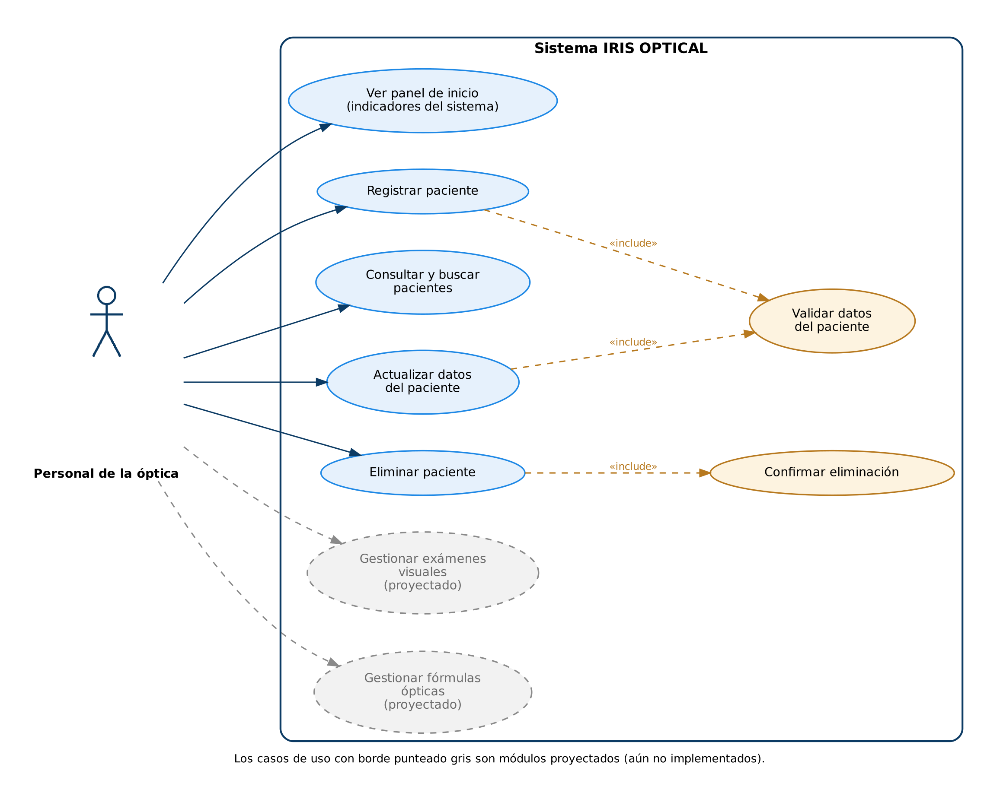

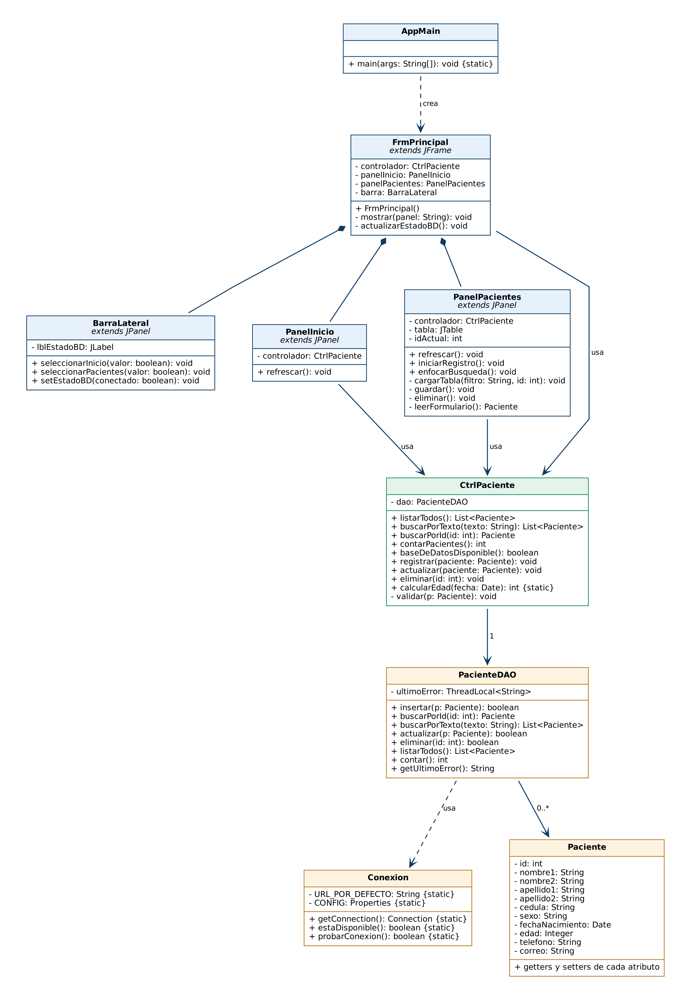

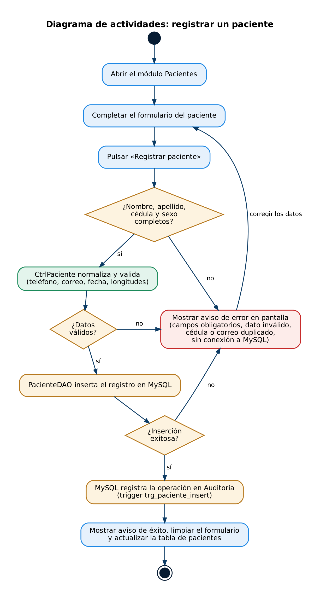

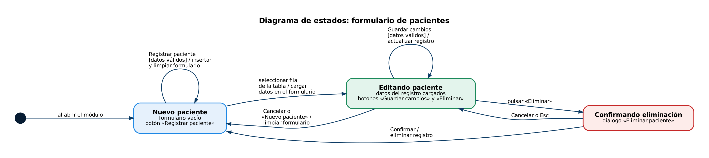
Organización del trabajo con roles, Product Backlog, división de tareas entre el estudiante y el asistente de IA, y sprints.
Si el documento no se muestra en tu dispositivo, ábrelo con el botón de arriba.
El procedimiento sp_buscar_paciente_por_cedula recibe una cédula y devuelve los datos del paciente. Está creado en la base de datos sistema_iris_v2.
Código del procedimiento
CREATE PROCEDURE sp_buscar_paciente_por_cedula(IN p_cedula VARCHAR(30))
BEGIN
SELECT ID_Paciente,
CONCAT_WS(' ', Nombre1, Nombre2, Apellido1, Apellido2) AS Paciente,
Cedula, Sexo, Fecha_Nacimiento, Edad, Telefono, Correo
FROM Paciente
WHERE Cedula = TRIM(p_cedula);
END
Ejemplo de uso
CALL sp_buscar_paciente_por_cedula('1020304050');

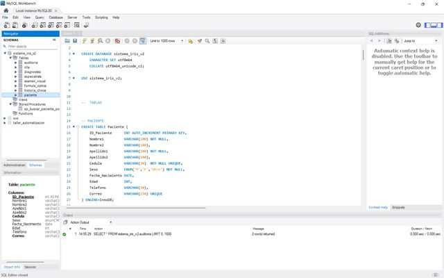
Capturas reales del sistema funcionando y de la base de datos. Haz clic en cada imagen para ampliarla.
Aplicación en funcionamiento

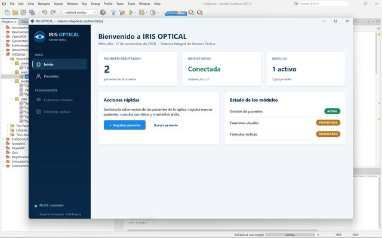

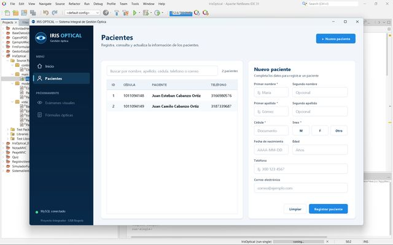

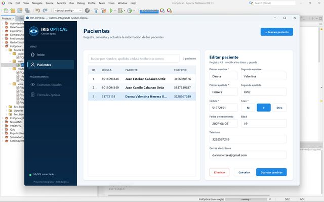

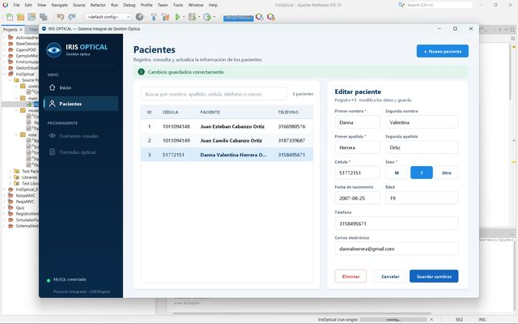

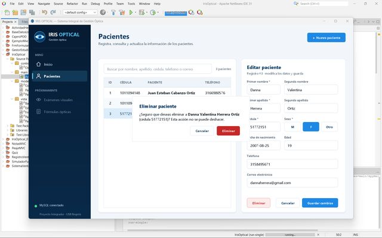

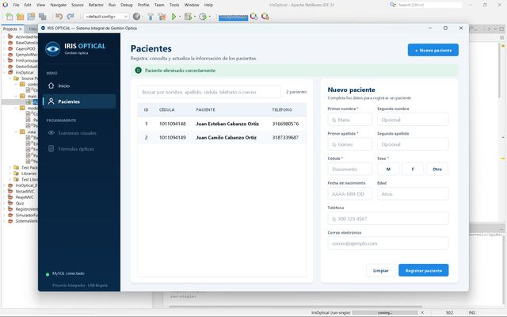
Base de datos en MySQL

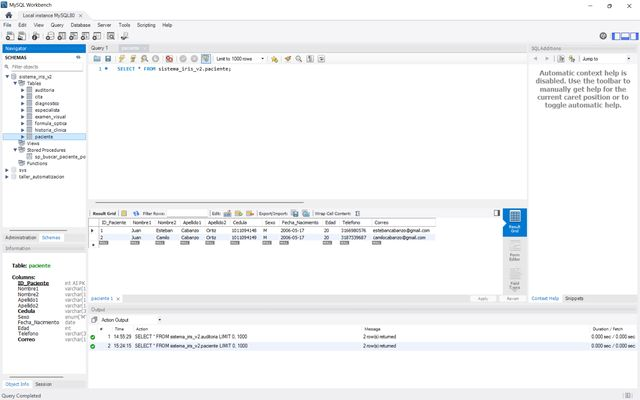

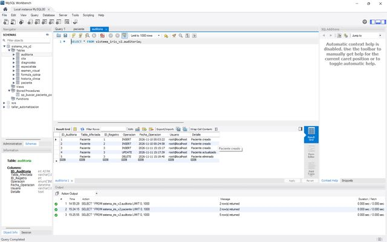
Proyecto en NetBeans

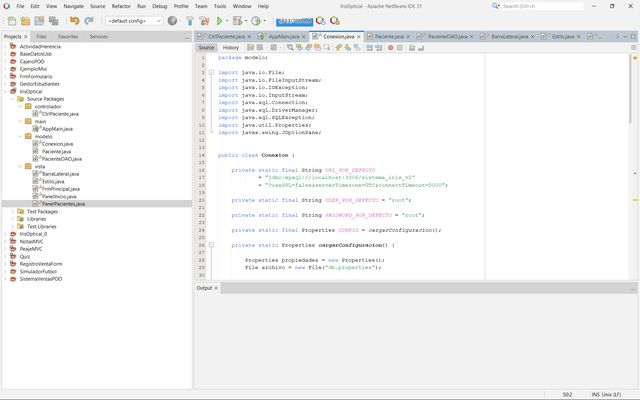